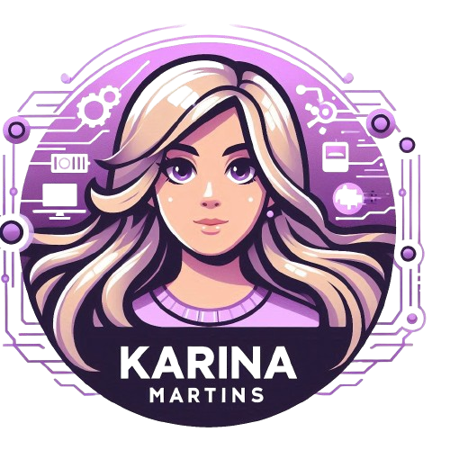

Bem-vindo ao meu portfólio!
Estou começando minha carreira como desenvolvedora full stack, movida por uma paixão por tecnologia e inovação.
Este espaço é dedicado a mostrar meus primeiros passos no desenvolvimento web, onde compartilho projetos e aprendizados. Cada projeto representa um marco na minha jornada, e estou animada para continuar crescendo e aprimorando minhas habilidades.
Sinta-se à vontade para explorar meus trabalhos e entrar em contato. Adoraria colaborar e criar algo incrível com você!